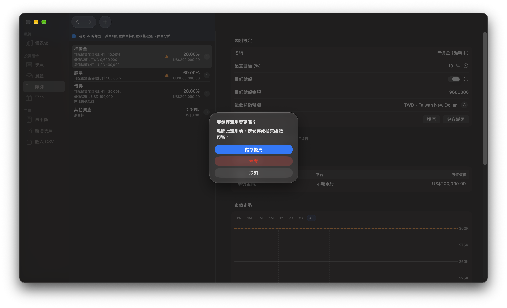
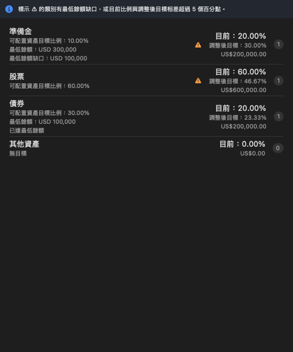
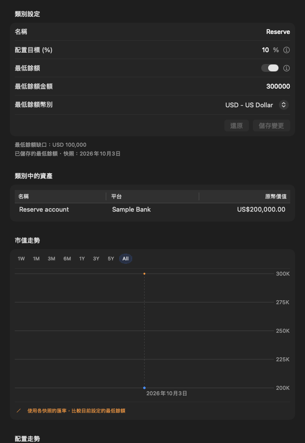
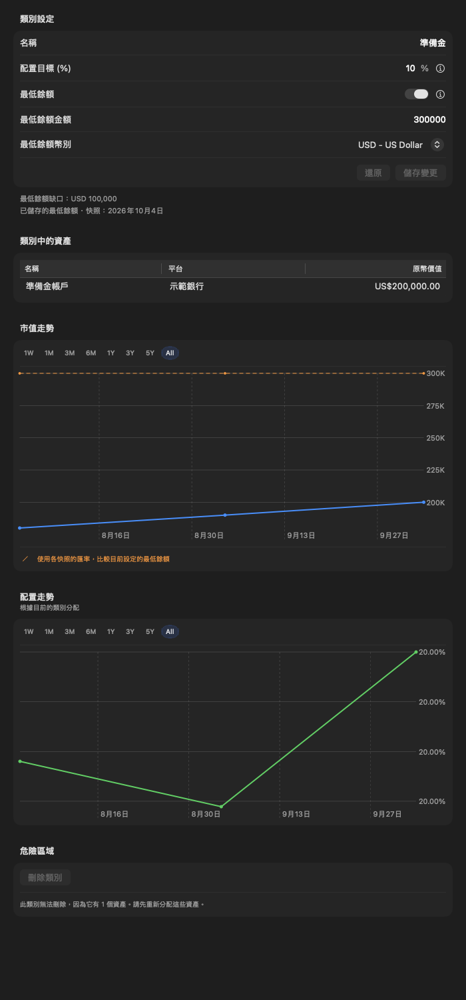

類別¶
類別可用來整理相關資產，並設定目標比例、最低餘額、兩者皆設定，或不設定任何目標。每項資產保留自己的幣別；類別可能包含不同幣別的資產，因此最低餘額也有獨立的幣別。
建立及編輯目標¶
- 開啟 類別 並按 +，或選取既有類別。
- 輸入名稱，並視需要設定 0 到 100 之間的目標比例。
- 啟用 最低餘額，在各自標示的欄位列中輸入非負金額並選擇幣別。既有類別若所有資產幣別相同，預設使用該幣別；幣別混合或沒有資產時，預設使用顯示幣別。
- 按 建立 或 儲存變更。輸入無效時，已儲存的類別不會變更。
「儲存變更」會同時儲存名稱及兩種目標。游標位於名稱、比例或最低餘額金額欄位時，按 Return 可儲存；Return 並非全域儲存快捷鍵。也可按 Cmd+S。按「還原」會回復所有已儲存欄位；尚未編輯時，兩個按鈕皆停用。帶著未儲存編輯離開類別時，會詢問要儲存、捨棄或取消。資訊按鈕提供目標說明；區段下方以最新快照評估已儲存的最低餘額，不包含尚未儲存的編輯。
目標比例和最低餘額彼此獨立。清空比例可移除比例目標；關閉最低餘額會同時移除金額和幣別。變更最低餘額的幣別會改變輸入金額的計價單位，不會自動換算。變更 App 的顯示幣別不會改變原本的目標。
編輯類別時，從側邊欄開啟「新增快照」，會先詢問如何處理目前的編輯。取消快照日期選擇視窗後，仍會保留原本的類別編輯畫面；再次編輯後離開，也會照常詢問要儲存、捨棄或取消。

了解目標的意義¶
最低餘額代表 至少保留此金額，並非精確餘額或累積進度目標。超過最低餘額本身不會產生賣出建議。
目標比例用於分配扣除保留餘額後的 可配置資產總額。未設定目標比例的類別會保留目前餘額；只設定最低餘額的類別會保留多餘資金，或需要補足至最低餘額。未分類資產也會保留。
目標比例合計必須為 100%，才能產生比例再平衡建議。您可以逐步儲存設定；只設定最低餘額的類別不需要比例。明確設定 0% 與留空不同：0% 的調整後目標為最低餘額，未設定最低餘額時則為零。
類別清單與詳細資訊¶


最低餘額金額與其他類別附加資訊採用一致的次要文字樣式。各列顯示目前價值、標示為「目前」及「調整後目標」的整體投資組合比例、可配置資產目標比例、資產數量，以及最低餘額狀態。缺口以顯示幣別呈現；缺少匯率時會顯示無法評估，而不是零。沒有資產的類別也可以有最低餘額需求。
有任何最低餘額缺口，或目前比例與調整後目標相差超過 5 個百分點時，會顯示警示圖示。將游標移至圖示可查看適用原因。可配置資產目標是您設定的偏好；調整後目標則是考量最低餘額與受保護餘額後的結果。
僅設定最低餘額的類別會在計畫可行時顯示調整後比例，並保留超過最低餘額的部分。沒有目標的類別不顯示調整後目標。計畫無法計算或不可行時，調整後目標會顯示破折號；可確認的最低餘額缺口仍會顯示警示。投資組合總值為零時，比例無法計算。資料變更或匯率更新會自動更新畫面，不會丟棄尚未儲存的類別編輯。
選取類別可檢視資產、編輯目標，以及查看價值與比例歷史。拖曳類別可調整順序。必須先重新指派所有資產，才能刪除類別。
歷史與幣別¶

價值歷史中的橘色線會使用各快照匯率，比較 目前設定的最低餘額。缺少匯率時比較線會中斷。這不代表目前的最低餘額在當時已經生效。歷史價值也依目前的類別指派計算。
比例歷史和儀表板圓餅圖仍顯示占整體投資組合的比例；可配置資產目標比例不會直接作為整體比例的參考線。缺少目標幣別匯率不會隱藏其他可正常計算的資產價值或投資組合圖表。